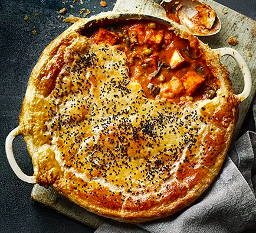

Paneer Pie

Description
A vegetarian pie with paneer. Credit to BBCGoodFood.
Ingredients
- 2 tbsp vegetable oil
- 440g paneer , cut into 2cm cubes
- 4 tbsp ghee or butter
- 2 large onions , finely sliced
- 2 large garlic cloves , crushed
- thumb-sized piece of ginger , finely grated
- ½ tsp hot chilli powder
- 2 tsp ground cumin
- 2 tsp fenugreek seeds
- 1½ tbsp garam masala
- 2 x 400g cans chopped tomatoes
- 1 tbsp caster sugar
- 300g potato , peeled and cut into 2cm cubes
- 150g spinach
- 150g frozen peas
- 100ml double cream
- 2 tbsp cashew nut butter
- plain flour , for dusting
- 320g sheet all-butter puff pastry
- 2 large eggs , 1 whole, 1 yolk only, lightly beaten together (freeze the leftover egg white for another recipe)
- 2 tsp nigella seeds
- pilau rice or green veg, to serve
Steps
- Heat the oil over a medium heat in a shallow flameproof casserole dish roughly 30cm wide. Add the paneer and fry for 5 mins, turning with tongs until each side is golden. Remove from the pan and set aside on a plate lined with kitchen paper.
- Heat the ghee or butter in the same dish over a medium-low heat, then add the onions and a big pinch of salt. Fry for 15 mins, or until softened and caramelised. Stir in the garlic and ginger, cook for 1 min, then tip in the spices and fry for a further 2 mins. Scrape the spiced onions into a food processor or blender along with the tomatoes and blitz until smooth. Pour back into the pan with 1½ cans of water, then stir through the sugar and potatoes. Bring to the boil, lower to a simmer, then cover and cook, stirring occasionally, for 20-25 mins or until the potato is just tender.
- Add the spinach and peas, and cook for 5 mins. Stir in the cream and cashew butter, then return the paneer to the pan and season to taste. Remove from the heat and set aside to cool completely.
- Heat the oven to 220C/200C fan/gas 8. On a lightly floured surface, roll the pastry out to just bigger than your casserole dish. Cut a thin strip off each side and fix these around the edge of the casserole. Roll the pastry sheet over the top and press the edges with a fork to seal, and tuck in any overhang. Brush with the egg, sprinkle with the nigella seeds and bake for 30-35 mins or until deep golden brown. Leave to rest for 15 mins before serving with pilau rice or green veg.